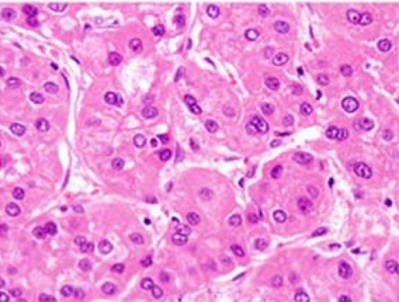

B 型肝炎與肝細胞癌
一句話定位：這是台灣國考消化科的中軸線。一階從病毒結構、cccDNA、HBx 致癌機轉切入； 二階從監測、影像診斷、BCLC 分期一路考到移植準則與全身治療。 近五年 29 題中有 26 題落在二階，而二階裡 醫學五（外科）佔了 7 題 — 只念內科會漏掉移植與栓塞這一整塊。
1. 定義與分類
- 慢性 B 型肝炎：HBsAg 持續陽性 ≥6 個月。
- 帶原者分期（EASL 命名，取代舊的「健康帶原者」）：
| 期別 | HBeAg | HBV DNA | ALT | 舊稱 |
|---|---|---|---|---|
| HBeAg 陽性慢性感染 | + | 很高（>10⁷） | 正常 | 免疫耐受期 |
| HBeAg 陽性慢性肝炎 | + | 高 | 升高 | 免疫廓清期 |
| HBeAg 陰性慢性感染 | − | 低（<2000） | 正常 | 非活動帶原 |
| HBeAg 陰性慢性肝炎 | − | 中至高 | 升高 | precore/BCP 突變再活化 |
命名改成「感染 vs 肝炎」是有臨床意義的：沒有肝炎不代表沒有風險， 因為 HBV 可經由基因體嵌入直接致癌。這正是 112-2 醫學三 Q15 那題的核心 （ALT 正常、HBeAg 陰性、但有肝癌家族史 → 仍須監測）。
- 肝細胞癌大體分型：結節型、巨塊型、瀰漫／浸潤型（infiltrative）。 浸潤型邊界不清、常合併門靜脈腫瘤栓塞，超音波不易辨識，AFP 常很高 — 113-2 醫學五 Q72 直接考這一點。
2. 流行病學
- 台灣曾是 HBV 高度流行區，成人 HBsAg 帶原率一度約 15–20%。
- 1984 年 7 月開始全球第一個全國性新生兒 B 肝疫苗接種計畫，兒童帶原率降到 <1%， 兒童肝癌發生率顯著下降 — 這是台灣考題最愛的本土素材，也是「疫苗可預防癌症」的第一個人類證據。
- REVEAL-HBV（台灣長期追蹤世代）確立 HBV DNA 病毒量與肝癌風險呈劑量效應， 是「病毒量本身就是危險因子」這個觀念的來源。
- HCC 仍居台灣癌症死因前段；男性多於女性（約 3:1，與雄性素受體訊號、鐵代謝、行為因子有關）。
- 危險因子疊加效應明顯：HBV＋黃麴毒素、HBV＋酒精、HBV＋MASLD 皆為超加成。
3. 病理與病理生理｜為什麼 B 肝會直接變成肝癌
這一節是一階與二階的接點，也是「不能只背結論」的地方。
3.1 病毒為什麼清不掉：cccDNA
HBV 進入肝細胞後（受體為 NTCP，即膽鹽轉運蛋白 — 順帶解釋了它的肝專一性）， 鬆弛環狀 DNA 在細胞核內修補成 cccDNA，以游離型微染色體存在。
- cccDNA 不是複製叉的產物，核苷（酸）類似物只能抑制反轉錄酶，擋不住既存的 cccDNA。
- 所以：停藥會復發、免疫抑制會再活化、「功能性治癒」（HBsAg 消失）才是真正目標。
3.2 為什麼 HBV 可以不經肝硬化就致癌（HCV 幾乎都要先肝硬化）
三條路徑並行：
- 基因體嵌入（integration）：HBV DNA 嵌入宿主基因體造成插入性突變， 常見熱點是 TERT 啟動子、KMT2B(MLL4)、CCNE1 → 直接活化端粒酶與細胞週期。
- HBx 蛋白：轉錄活化因子，干擾 p53 功能、影響 DNA 修復與粒線體， 造成基因體不穩定。
- 慢性發炎—再生循環：免疫攻擊 → 肝細胞死亡 → 再生 → 突變累積（這條 HCV 也有）。
一階考點對照：113-2 醫學二 Q11「下列何種病毒感染比較不會直接造成細胞增生形成腫瘤」 ——考的就是「哪些病毒有直接致癌機轉（HBV、HPV、EBV、HTLV-1、KSHV）」對比 「主要靠慢性發炎間接致癌（HCV）」。
3.3 分子事件的時間順序
flowchart TD A[HBV 慢性感染] --> B[基因體嵌入 + HBx 表現] A --> C[慢性壞死發炎與再生] B --> D[TERT 啟動子活化
端粒酶重新開啟] C --> D D --> E[分化不良結節] E --> F{後續驅動突變} F --> G[CTNNB1 β-catenin
約 30%] F --> H[TP53 失活
約 30%] F --> I[ARID1A / AXIN1 等] G --> J[肝細胞癌] H --> J I --> J J --> K[門靜脈侵犯 / 肝內轉移]
- TERT 啟動子突變是最常見、也是最早發生的事件（由分化不良結節轉為 HCC 的關鍵閘門）。
- CTNNB1 突變者常呈 β-catenin 活化表型，與免疫「冷腫瘤」、免疫治療反應較差有關 — 114-2 醫學三 Q37 考的就是這一層分子知識。
3.4 為什麼會有肝硬化這個中介
慢性壞死 → 星狀細胞活化（TGF-β、PDGF）→ 膠原沉積 → 結構重塑 → 血流阻力上升（門脈高壓）＋肝細胞功能下降。 肝硬化是 HCC 最強的單一危險因子，但如前述，HBV 可以繞過它。
4. 一階基礎：組織學・解剖・生理・生化
| 一階知識點 | 內容 | 二階怎麼用到 |
|---|---|---|
| 肝小葉分區 | Zone 1 近門脈（氧最足、糖質新生）；Zone 3 近中央靜脈（缺氧敏感、含最多 CYP450） | Zone 3 最先壞死 → 解釋缺血性肝炎與乙醯胺酚毒性的中央小葉壞死 |
| 肝臟血流雙供 | 門靜脈約 75% 血流、肝動脈約 25% 血流但供氧各半 | HCC 由肝動脈供血 → 這是 TACE 與動脈期強化的解剖基礎 |
| Couinaud 分節 | 依肝靜脈與門脈分支分 8 節 | 肝切除範圍、影像定位、移植取肝 |
| NTCP 受體 | 膽鹽轉運蛋白，HBV 進入肝細胞的受體 | 解釋肝專一性；bulevirtide 阻斷此受體治療 D 肝 |
| 膽紅素代謝 | 未結合 → UGT1A1 結合 → 排入膽汁 | 肝功能失代償時的黃疸型態判讀 |
| 白蛋白與凝血因子合成 | 半衰期分別約 20 天與數小時 | 為何 INR 比白蛋白更早反映急性肝衰竭 |
| 尿素循環 | 肝臟把氨轉成尿素 | 肝性腦病的機轉；側支循環讓氨繞過肝臟 |
5. 臨床表現
- 慢性 B 肝多數無症狀，這是監測制度存在的理由。
- 急性發作：疲倦、食慾差、右上腹悶、黃疸；ALT 可達數千。
- HCC 早期無症狀；出現症狀多已進展：體重減輕、右上腹脹、可觸及肝腫大（112-1 醫學三 Q15 用 RMCL 肝長度 18 cm 描述肝腫大）。
- 警訊：突發腹痛＋低血壓 → 腫瘤破裂出血；新發生腹水或肝功能急遽惡化 → 門靜脈腫瘤栓塞。
- 副腫瘤症候群：低血糖、紅血球增多症、高血鈣、高膽固醇。
6. 實驗室檢查
| 項目 | 反映什麼 | 限制 |
|---|---|---|
| HBsAg | 現行感染 | 量化 HBsAg 才能反映 cccDNA 活性 |
| Anti-HBs | 免疫力 | 單獨陽性＝疫苗；要靠 anti-HBc 分辨曾感染 |
| Anti-HBc IgM / IgG | 急性 vs 曾感染 | 窗口期唯一陽性標記 |
| HBeAg / anti-HBe | 病毒複製活性 | precore 突變者 HBeAg 陰性但病毒量仍高 |
| HBV DNA | 治療適應症與療效 | 與肝損傷程度不一定平行 |
| ALT | 肝細胞損傷 | 不等於肝功能；免疫耐受期可完全正常 |
| AFP | HCC 輔助 | 敏感度僅約 60%；肝炎活動、懷孕、生殖細胞瘤亦升高；不可單獨用於診斷 |
| PIVKA-II (DCP) | HCC 輔助 | 維生素 K 缺乏或用 warfarin 時偽陽性 |
| 白蛋白 / INR / 膽紅素 | 肝功能儲備 | 進入 Child-Pugh 與 MELD |
考點：112-1 醫學四 Q9「10 歲兒童 anti-HBs 陽性，如何分辨疫苗或曾感染」→ 驗 anti-HBc。
7. 影像與內視鏡
HCC 的影像診斷特殊性（這是 113-1 醫學三 Q21 的答案核心）
在肝硬化或慢性 B 肝這種高風險背景下，典型影像即可確診，不需病理切片。
典型表現（動態顯影 CT 或 MRI）： 1. 動脈期高強化（arterial phase hyperenhancement, APHE）——因為腫瘤由肝動脈供血； 2. 門脈期／延遲期洗脫（washout）——因為腫瘤缺乏正常門脈供血與竇狀隙結構； 3. 可有假包膜（capsule appearance）。
這三點就是 LI-RADS LR-5（確定 HCC）的核心。
| 影像 | 判讀重點 | 陷阱 |
|---|---|---|
| 超音波 | 監測工具；低回音或鑲嵌樣 | 浸潤型不易看見、肥胖與腸氣干擾 |
| 動態 CT/MRI | APHE＋washout | 只在高風險族群成立；正常肝要切片 |
| 肝膽特異性顯影 MRI（Gd-EOB） | 肝膽期低訊號提早偵測 | 高分化 HCC 可能不洗脫 |
| 血管攝影 | TACE 時評估供血 | 肝外側支供血最常見為右下橫膈動脈（115-1 醫學五 Q72） |
- 浸潤型 HCC：邊界不清＋門靜脈腫瘤栓塞（可見栓塞內動脈期強化，與單純血栓區分）。
- 良性鑑別：血管瘤為週邊結節狀漸進填充；FNH 有中央疤痕；肝腺瘤易出血且與口服避孕藥相關 （114-2 醫學二 Q90 考 HNF1α 失活型腺瘤 — 特徵是瀰漫脂肪化、幾乎不惡性轉化）。
8. 鑑別診斷
| 鑑別對象 | 關鍵區分點 | 一句話決斷 |
|---|---|---|
| 肝內膽管癌 | 延遲期漸進性強化、常牽引肝包膜、CA19-9 升高 | 延遲期越來越亮 → 想膽管癌 |
| 轉移性肝癌 | 多發、環狀強化、原發灶病史 | 多顆牛眼病灶 → 找原發 |
| 肝腺瘤 | 年輕女性、口服避孕藥、易出血 | 出血的肝腫瘤先想腺瘤 |
| FNH | 中央疤痕、肝膽期等或高訊號 | 有中央疤痕 → FNH |
| 血管瘤 | 週邊結節狀向心填充 | 填充像燈泡 → 血管瘤 |
| 再生結節／分化不良結節 | 無 APHE 或無洗脫 | 沒有洗脫就不能叫 LR-5 |
9. 分級／評分系統
| 系統 | 用途 | 適用族群 | 限制 | 國考陷阱 | 決策連結 |
|---|---|---|---|---|---|
| BCLC | HCC 分期＋治療對應 | 已確診 HCC | 中期異質性大 | 誤以為只看腫瘤大小 | 直接決定切除／燒灼／TACE／全身治療 |
| Child-Pugh | 肝功能儲備 | 肝硬化 | 主觀項目、無腎功能 | 誤以為含 creatinine | 能否切除、能否用某些藥 |
| ALBI | 客觀肝功能 | 尤其 Child A 再分層 | 非分期系統 | 誤當成可取代 BCLC | TACE／標靶耐受度預測 |
| MELD | 移植排序 | 末期肝病 | 不含腫瘤負荷 | 誤以為含腹水 | 移植優先序（HCC 另有 exception points） |
| Milan criteria | 移植適應症 | 待移植 HCC | 偏嚴格、不含生物學行為 | 誤用於決定燒灼或切除 | 單顆≤5cm 或≤3顆各≤3cm、無血管侵犯與肝外轉移 |
| TNM (AJCC) | 病理分期 | 術後 | 未整合肝功能 | 與 BCLC 混用 | 術後預後與輔助治療評估 |
113-1 醫學五 Q5 直接問「下列何者不是米蘭準則的條件」； 112-1 醫學五 Q31 問「哪種腫瘤狀態較不建議移植」——兩題都在同一個知識點上。
10. 診斷流程
flowchart TD A[高風險族群
肝硬化／慢性B肝] --> B[每 6 個月
腹部超音波 ± AFP] B --> C{發現結節} C -->|<1 cm| D[3-6 個月密集追蹤] C -->|≥1 cm| E[動態 CT 或 MRI] E --> F{APHE + washout?} F -->|是| G[確診 HCC
不需切片] F -->|否/不典型| H[換另一種顯影模式] H --> I{仍不典型} I -->|是| J[考慮切片] I -->|否| G G --> K[BCLC 分期] K --> L[依期別選擇治療]
11. 治療策略
11.1 慢性 B 肝抗病毒治療
要不要治療，看三件事：病毒量、肝損傷、肝纖維化／額外風險。
| 情境 | 處置 |
|---|---|
| 肝硬化＋可測得 HBV DNA | 不論 ALT，一律治療 |
| ALT 持續升高＋HBV DNA 高 | 治療 |
| 免疫耐受期（ALT 正常、病毒量極高、年輕） | 傳統上觀察；近年指引傾向放寬治療門檻 |
| 家族史 HCC、年齡 >30–40、明顯纖維化 | 治療門檻下修 |
| 接受免疫抑制／化療（含 rituximab、anti-TNF） | 預防性抗病毒，避免再活化 |
- 首選：entecavir、TDF、TAF（高基因屏障）。
- 懷孕：以 TDF 安全資料最多為首選；高病毒量孕婦於第三孕期給藥可降低母嬰垂直傳染 （加上新生兒 HBIG＋疫苗）。115-1 醫學三 Q15 考的就是哪一個不建議用於孕婦。
- 停藥要謹慎：可能出現停藥後急性發作，肝硬化者原則上長期使用。
- 111-1 醫學三 Q15 問「何者不是治療決策依據」——選項裡通常會塞入與決策無關的項目 （例如單純 HBsAg 效價或非相關症狀）。
11.2 HCC 依 BCLC 分期治療
| 分期 | 主要治療 | 備註 |
|---|---|---|
| 0／A | 切除、射頻燒灼、移植 | 切除前要評估肝功能、剩餘肝體積、門脈壓 |
| B | TACE（近年合併全身治療試驗陽性） | 腫瘤負荷過大者可考慮直接全身治療 |
| C | 全身治療 | 免疫合併抗血管新生為第一線 |
| D | 支持治療／移植評估 | Child C 者以移植為唯一根治機會 |
- 第一線全身治療：atezolizumab＋bevacizumab（IMbrave150）； durvalumab＋tremelimumab（HIMALAYA／STRIDE）；不適合免疫治療者用 lenvatinib 或 sorafenib。
- 用 bevacizumab 前需內視鏡評估食道靜脈曲張（出血風險）——很好用的整合考點。
- 肝切除術前準備（115-2 醫學五 Q39 的方向）：肝功能分級、ICG 滯留試驗、剩餘肝體積估算、 門脈高壓評估；不必要的項目常被設計成答案。
- 活體肝移植的倫理與法規（112-2 醫學五 Q79）：捐贈者須為五親等內血親或配偶， 且配偶需符合結婚滿一定期間或已生育子女等法定條件，並經倫理委員會審查。
12. 預後
- 早期切除／燒灼 5 年存活可達 50–70%，但復發率 5 年高達 70%（多中心發生特性）。
- 移植在 Milan 準則內，5 年存活約 70%、復發率低（因為連同「致癌的肝」一起換掉）。
- 門靜脈腫瘤栓塞、肝外轉移、Child C 為預後最差的組合。
13. 一階 ↔︎ 二階橋樑
使用者指定的示範：一階病毒致癌機轉 → 二階肝癌分期與治療。
| 一階考點 | 機轉 | 二階對應 | 臨床決策 |
|---|---|---|---|
| HBV 為部分雙股 DNA、具反轉錄酶 | 核苷（酸）類似物可抑制反轉錄 | 抗病毒藥物選擇 | entecavir／TDF／TAF |
| cccDNA 為核內微染色體 | 藥物無法清除 | 為何要長期治療、停藥會復發 | 肝硬化者不停藥 |
| HBV 嵌入宿主基因體、HBx 抑制 p53 | 可不經肝硬化直接致癌 | 非肝硬化帶原者也要監測 | 每 6 個月超音波 ± AFP |
| TERT 啟動子突變為最早事件 | 端粒酶重啟動 | 分化不良結節 → HCC 的轉變 | <1 cm 結節密集追蹤而非立即切片 |
| 肝臟雙重血流、腫瘤由肝動脈供血 | 動脈期強化＋門脈期洗脫 | 影像即可確診，不需切片 | LI-RADS LR-5 → 直接分期治療 |
| 肝動脈供血特性 | 阻斷動脈可造成腫瘤壞死 | TACE 的原理 | 肝外側支供血（右下橫膈動脈） |
| 肝竇內皮與 VEGF 訊號 | 血管新生依賴 | 抗血管新生藥物 | bevacizumab／lenvatinib |
| β-catenin 活化為免疫冷腫瘤 | T 細胞浸潤少 | 免疫治療反應差 | 治療前分子分型的臨床意涵 |
| 疫苗誘發 anti-HBs | 阻斷感染 | 台灣新生兒接種計畫 | 兒童肝癌下降的實證 |
14. 高頻考點與陷阱
- 考點：anti-HBc 是分辨「疫苗 vs 曾感染」的唯一標記。
- 考點：HCC 在高風險背景下影像即可確診，這是極少數不需病理的癌症。
- 考點：HBV 可不經肝硬化致癌；HCV 幾乎都要先肝硬化。
- 考點：米蘭準則是移植適應症。
- 陷阱：AFP 正常不能排除 HCC（約四成不升高）。
- 陷阱：ALT 正常 ≠ 不用監測（免疫耐受期、HBeAg 陰性慢性感染）。
- 陷阱：把 Child-Pugh 當分期、把 BCLC 當肝功能評估。
- 誘答設計：在「治療適應症」題目塞入與決策無關的檢驗值；在「米蘭準則」題目塞入 「無肝硬化」「AFP <400」等看似合理但不屬於準則的條件。
15. 口訣與記憶法
- HBV 三條致癌路：「嵌、X、炎」→ 基因嵌入、HBx 抑 p53、慢性發炎。
- HCC 影像兩件事：「亮得快、退得快」（動脈期亮、門脈期洗脫）。
- 米蘭準則 1-5-3-3：1 顆 ≤5 cm，或 ≤3 顆各 ≤3 cm。
- 分辨疫苗與感染：「看核心」——anti-HBc 是核心抗體，打疫苗不會有。
- BCLC 五期治療：「切燒移、栓、全身、支持」對應 0/A → B → C → D。
- 市售備考書（如 First Aid 系列）對 HBV 血清學有經典的時序圖，建議理解「窗口期為何只剩 anti-HBc」後自己重畫一次；本知識庫不逐字重製其內容，僅標示可對照的章節主題。
16. 2024–2026 值得關注的新研究與新療法
| 主題 | 內容 | 對考試的意義 |
|---|---|---|
| 輔助性免疫治療 | IMbrave050：切除或燒灼後高復發風險者使用 atezolizumab＋bevacizumab，為第一個達到無復發存活主要終點的輔助治療試驗（後續追蹤結果需留意） | 「術後有沒有輔助治療」的標準答案正在改變 |
| TACE 合併全身治療 | EMERALD-1（durvalumab＋bevacizumab＋TACE）、LEAP-012（pembrolizumab＋lenvatinib＋TACE）於中期 HCC 顯示無惡化存活獲益 | BCLC B 期的治療正從單純 TACE 轉為合併策略 |
| 第一線雙免疫 | CheckMate 9DW（nivolumab＋ipilimumab）於進展期 HCC 顯示總存活獲益 | 第一線選項增加，考題可能問「不含抗血管新生的組合」 |
| B 肝功能性治癒 | siRNA／反義寡核苷酸（如 bepirovirsen）與治療性疫苗進入後期試驗，目標為 HBsAg 清除 | 「為何核苷類似物無法治癒」的延伸考點 |
| D 肝新藥 | bulevirtide 阻斷 NTCP 進入受體 | 直接對應一階的 NTCP 受體知識 |
| 非侵入性纖維化評估 | 彈性造影＋血清標記取代切片的角色持續擴大 | 監測族群界定的依據 |
| MASLD 更名與共病 | 代謝功能障礙相關脂肪肝與 HBV 併存時加成致癌風險 | 115-2 醫學三 Q57 已直接考 MASH/MASLD 命名 |
17. 心智圖
mindmap
root((B肝與肝癌))
病毒學
部分雙股DNA
反轉錄酶
cccDNA微染色體
NTCP受體
致癌機轉
基因嵌入TERT
HBx抑p53
慢性發炎再生
不需經肝硬化
血清學
HBsAg現行感染
antiHBc分辨疫苗
HBeAg複製活性
窗口期
監測
高風險每6個月
超音波加AFP
AFP敏感度有限
診斷
動脈期強化
門脈期洗脫
LI-RADS LR5
免切片
分期
BCLC整合三要素
ChildPugh肝功能
米蘭準則移植
治療
切除燒灼移植
TACE肝動脈供血
免疫合併抗血管新生
抗病毒長期治療
預防
新生兒疫苗1984
母嬰阻斷TDF
抗病毒降風險
18. 歷屆考題對照（111-1 ～ 115-2）
| 年度 | 階段/科目 | 題號 | 考點核心 | 答案方向 |
|---|---|---|---|---|
| 111-1 | 二階 醫學三 | 15 | 慢性 B 肝治療決策的依據 | 與病毒量、肝損傷、纖維化無關者為非依據 |
| 111-1 | 二階 醫學三 | 74 | 動態 CT 肝腫瘤判讀（影像題） | 依強化型態辨識良惡性 |
| 111-1 | 二階 醫學三 | 75 | B 肝追蹤中發現 CT 異常 | 高風險背景＋典型強化 → HCC |
| 111-2 | 二階 醫學三 | 22 | 何者不是 HCC 高危險群 | 與慢性肝病無關的選項 |
| 112-1 | 一階 醫學二 | 15 | D 型肝炎病毒特性 | 缺陷病毒、需 HBV 外套膜 |
| 112-1 | 二階 醫學三 | 15 | 肝腫大與體重減輕的臨床判讀 | 依理學檢查推進診斷 |
| 112-1 | 二階 醫學四 | 9 | anti-HBs 陽性者如何分辨疫苗或感染 | 驗 anti-HBc |
| 112-1 | 二階 醫學五 | 31 | 何種 HCC 較不建議移植 | 超出米蘭準則／有血管侵犯 |
| 112-2 | 二階 醫學三 | 15 | ALT 正常、HBeAg 陰性帶原者的處置 | 仍需定期監測 |
| 112-2 | 二階 醫學五 | 79 | 配偶活體捐肝的適法性 | 依人體器官移植條例的親屬與審查規定 |
| 113-1 | 二階 醫學三 | 21 | HCC 影像診斷的特殊性 | 典型影像可免切片 |
| 113-1 | 二階 醫學五 | 5 | 何者不是米蘭準則條件 | 不屬於大小／數目／血管侵犯者 |
| 113-2 | 一階 醫學二 | 11 | 何種病毒不會直接致細胞增生 | 直接致癌 vs 間接致癌 |
| 113-2 | 二階 醫學五 | 72 | 浸潤型 HCC 最常合併的影像發現 | 門靜脈腫瘤栓塞 |
| 114-2 | 一階 醫學二 | 90 | HNF1α 失活型肝腺瘤特徵 | 瀰漫脂肪化、惡性轉化少 |
| 114-2 | 二階 醫學三 | 37 | HCC 分子基因變異 | TERT／CTNNB1／TP53 的角色 |
| 115-1 | 一階 醫學二 | 9 | 各型肝炎病毒特性比較 | 見比較表 4 |
| 115-1 | 二階 醫學三 | 15 | 孕婦不建議使用的核苷類似物 | TDF 為首選，其他安全資料不足 |
| 115-1 | 二階 醫學三 | 17 | HCC 預防措施 | 疫苗、抗病毒、危險因子控制 |
| 115-1 | 二階 醫學五 | 19 | B 肝追蹤發現肝腫瘤的下一步 | 動態影像確認強化型態 |
| 115-1 | 二階 醫學五 | 72 | TACE 時最常見的肝外供血來源 | 右下橫膈動脈 |
| 115-2 | 二階 醫學五 | 39 | 肝硬化病人肝癌切除的術前準備 | 非必要項目為答案 |
完整題幹與選項請見
corpus/text/（考選部原始題本文字檔）。 本表為考點索引，不重製題目全文。
19. 影像資源（標準圖片來源）
| 影像 | 建議來源 | 連結 | 授權 |
|---|---|---|---|
| HCC 動脈期強化＋洗脫 | Radiopaedia — Hepatocellular carcinoma | https://radiopaedia.org/articles/hepatocellular-carcinoma | CC BY-NC-SA 3.0 |
| LI-RADS 判讀圖解 | American College of Radiology LI-RADS | https://www.acr.org/Clinical-Resources/Clinical-Tools-and-Reference/Reporting-and-Data-Systems/LI-RADS | 教學使用需依 ACR 規定 |
| 門靜脈腫瘤栓塞 | Radiopaedia — Portal vein tumour thrombus | https://radiopaedia.org/articles/portal-vein-tumour-thrombus | CC BY-NC-SA 3.0 |
| 肝血管瘤／FNH／腺瘤對照 | Radiopaedia — Liver lesions | https://radiopaedia.org/articles/liver-lesions | CC BY-NC-SA 3.0 |
| HBV 血清學時序圖 | CDC Viral Hepatitis — Interpretation of Hepatitis B Serologic Test Results | https://www.cdc.gov/hepatitis-b/hcp/diagnosis-testing/ | 美國政府公開資料 |
| 肝臟 Couinaud 分節 | Radiopaedia — Couinaud classification | https://radiopaedia.org/articles/couinaud-classification-of-liver-anatomy | CC BY-NC-SA 3.0 |
使用原則：本知識庫不內嵌他人圖檔，只提供來源連結與授權說明； 自製示意圖以 mermaid 或自行繪製為主。
20. 自我測驗
測驗題原始碼
Q: 關於 B 型肝炎病毒致癌機轉，下列敘述何者最正確？ A) 必須先經過肝硬化階段才會發生肝細胞癌 B) 病毒 DNA 可嵌入宿主基因體，並經 HBx 蛋白干擾 p53 而直接促成癌變 C) 核苷類似物可清除肝細胞核內的 cccDNA D) HBV 為單股 RNA 病毒，不具反轉錄酶活性 ans: B why: HBV 可藉基因體嵌入（常見熱點包括 TERT 啟動子）與 HBx 蛋白直接致癌，不一定要先肝硬化，這與 HCV 不同。核苷類似物只抑制反轉錄酶，無法清除 cccDNA。HBV 是部分雙股 DNA 病毒且具反轉錄酶。 Q: 55 歲男性，慢性 B 型肝炎合併肝硬化，超音波發現肝右葉 2.5 cm 結節。動態 CT 顯示動脈期明顯強化、門脈期洗脫。下一步最適當的處置為何？ A) 安排肝穿刺切片以取得病理診斷 B) 追蹤三個月後再評估 C) 依此影像診斷肝細胞癌並進行分期評估 D) 檢驗 AFP，若正常則排除肝細胞癌 ans: C why: 在肝硬化或慢性 B 肝的高風險背景下，動脈期強化加上門脈期洗脫即符合診斷標準（LI-RADS LR-5），可免切片直接分期治療。AFP 敏感度僅約六成，正常不能排除。 Q: 下列何者符合米蘭準則（Milan criteria）？ A) 單一腫瘤 6 cm，無血管侵犯 B) 三顆腫瘤，最大 3 cm，無血管侵犯與肝外轉移 C) 兩顆腫瘤各 4 cm，無肝外轉移 D) 單一腫瘤 4 cm，合併門靜脈腫瘤栓塞 ans: B why: 米蘭準則為單顆 ≤5 cm，或 ≤3 顆且每顆 ≤3 cm，且無大血管侵犯與肝外轉移。A 超過 5 cm、C 顆數雖符合但單顆超過 3 cm、D 有血管侵犯。 Q: 10 歲兒童檢查發現 anti-HBs 陽性、HBsAg 陰性。最能區分此免疫力來自疫苗或曾經感染的檢查為何？ A) HBeAg B) anti-HBc C) HBV DNA D) 定量 anti-HBs 效價 ans: B why: 疫苗只含表面抗原，不會產生核心抗體。anti-HBc 陽性代表曾自然感染。 Q: 進展期肝細胞癌病人接受 atezolizumab 合併 bevacizumab 治療前，下列何項評估最為必要？ A) 上消化道內視鏡評估食道靜脈曲張 B) 骨骼掃描 C) 腦部電腦斷層 D) 肺功能檢查 ans: A why: bevacizumab 為抗血管新生藥物，會增加靜脈曲張出血風險，治療前需內視鏡評估並視需要先行預防治療。
21. Anki 卡片
Anki 卡片原始碼
HBV 進入肝細胞的受體是什麼？有何臨床應用？ NTCP（膽鹽轉運蛋白）；bulevirtide 阻斷此受體治療 D 型肝炎 B肝 為什麼核苷類似物無法治癒 B 型肝炎？ 無法清除細胞核內的 cccDNA（游離型微染色體），停藥後可復發 B肝 HBV 直接致癌的三條路徑？ 基因體嵌入（TERT 等熱點）、HBx 抑制 p53 造成基因不穩定、慢性發炎再生循環 B肝 HBV 與 HCV 致癌最大的差異？ HBV 可不經肝硬化直接致癌；HCV 幾乎都需先發展成肝硬化 B肝 HCC 最常見且最早發生的分子事件？ TERT 啟動子突變（端粒酶重新活化） 肝癌 台灣新生兒 B 肝疫苗接種計畫始於何年？意義？ 1984 年 7 月，全球第一個全國性計畫；兒童帶原率與兒童肝癌顯著下降，是疫苗預防癌症的首個人類證據 B肝 REVEAL-HBV 研究的核心結論？ HBV DNA 病毒量與肝癌風險呈劑量效應關係 B肝 HCC 在什麼情況下可以不做切片就診斷？ 高風險背景（肝硬化或慢性 B 肝）下，動態影像呈動脈期高強化加門脈／延遲期洗脫（LI-RADS LR-5） 肝癌 為什麼 HCC 會有動脈期強化與門脈期洗脫？ 腫瘤由肝動脈供血且缺乏正常門脈供血與竇狀隙結構 肝癌 TACE 遇到肝外側支供血時最常見的來源？ 右下橫膈動脈 肝癌 米蘭準則的內容？ 單顆≤5cm，或≤3顆且每顆≤3cm，無大血管侵犯與肝外轉移；用於肝移植適應症 肝癌 浸潤型肝細胞癌最常合併的影像發現？ 門靜脈腫瘤栓塞 肝癌 AFP 用於 HCC 的限制？ 敏感度僅約 60%，肝炎活動、懷孕、生殖細胞瘤亦可升高，不可單獨用於診斷 肝癌 慢性 B 肝合併肝硬化者的治療原則？ 只要偵測得到 HBV DNA 即應治療，不論 ALT 是否正常，且原則上長期使用不停藥 B肝 懷孕婦女慢性 B 肝首選抗病毒藥物？ TDF（安全資料最多）；高病毒量者第三孕期給藥可降低垂直傳染 B肝 使用 bevacizumab 治療 HCC 前必須做什麼？ 上消化道內視鏡評估食道靜脈曲張，降低出血風險 肝癌 CTNNB1（β-catenin）突變的 HCC 有何臨床意義？ 多為免疫「冷腫瘤」、T 細胞浸潤少，免疫治療反應較差 肝癌 BCLC 分期與 TNM 最大的不同？ BCLC 同時整合腫瘤負荷、肝功能與體能狀態並直接對應治療 肝癌 肝臟 Zone 3 的特性與臨床意義？ 近中央靜脈、含最多 CYP450、最缺氧敏感；缺血性肝炎與乙醯胺酚毒性造成中央小葉壞死 一階基礎 為何 INR 比白蛋白更早反映急性肝衰竭？ 凝血因子半衰期僅數小時，白蛋白約 20 天 一階基礎
22. 參考資料
- AASLD. Guidance on Systemic Treatment and Diagnosis/Management of HCC（2023 版）。
- Reig M, et al. BCLC strategy for prognosis prediction and treatment recommendation: 2022 update.
- EASL Clinical Practice Guidelines on the management of hepatitis B virus infection.
- Chang MH, et al. Universal hepatitis B vaccination and childhood hepatocellular carcinoma（台灣本土研究）。
- Chen CJ, et al. REVEAL-HBV：Risk of HCC across a biological gradient of serum HBV DNA level.
- Finn RS, et al. IMbrave150；Abou-Alfa GK, et al. HIMALAYA；Qin S, et al. IMbrave050。
- 衛生福利部中央健康保險署，B 型及 C 型肝炎抗病毒藥物給付規定（最新版）。
- 考選部，111-1～115-2 醫師分階段考試試題與答案（公開資料）。
圖譜
以下圖片來自 Wikimedia Commons，授權為 CC0／PD／CC BY／CC BY-SA，已逐張人工確認內容與說明相符。


